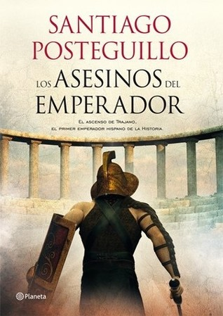

Los asesinos del emperador (Trajano, #1)
Reseña por Jorge I. Zuluaga

Ver reseña en GoodReads (necesita cuenta)
Cada vez admiró más la obra de Posteguillo (esta es mi tercera novela suya leída): la calidad narrativa y literaria, la complejidad de los personajes (históricos recreados y ficticios), la capacidad para aprovechar la literatura para divulgar la historia y, aunque no soy un experto, la precisión histórica que se deducen de sus propios notas aclaratorias, comentarios, reflexiones y hasta conjeturas en los imperdibles anexos de cada novela.
Como seguro habrán leído en la descripción, los asesinos del emperador narra la historia del ascenso del que es considerado por algunos (incluyendo el mismo Posteguillo) el más grande emperador que tuvo el Imperio Romano, el hispano Marco Ulpio Trajano.
La obra se desarrolla en el último tercio del siglo primero de la era común (entre el año 66 y el 100) y cubre el reinado de por lo menos 8 emperadores: Nerón, Galva, Otón, Vitelio, Vespasiano, Tito, Domiciano y el mismo Trajano. ¡Hágame el favor!
Como lo explica el mismo autor, este amplio intervalo de tiempo permite poner en el contexto de los convulsos tiempos que vivió Roma desde el final de la dinastía Julia (que termino con Nerón) hasta el final de la dinastía Flavia (que termino con el tiránico Domiciano), la vida de Trajano padre e hijo y el lento pero constante "cursus honorum" de este último hasta ocupar el "trono del mundo".
Hasta ahora no había leído novela histórica más emocionante (con más acción por página), más llena de intrincadas conjuras, asesinato y tortura (no es que me guste, pero hacía parte del "día a día" de la Roma Imperial), con las más espectaculares batallas y los desenlaces más impredecibles; escenas y personajes épicos y heroicos. ¡Que emoción!
Les digo pues que en más de una ocasión me la imaginé llevada al cine (o como se usa hoy a las plataformas de Streaming) como una gran película o una serie. Casualmente casi a un tercio del final tuve la oportunidad de ver la serie Bárbaros de Netflix que se desarrolla alrededor de la batalla de Teutoburgo en Germania Superior y que es mencionada en el libro y comparada con la sangrienta batalla contra los dacios y sus aliados al norte del Danubio. ¡Que batalla!
Los personajes de los gladiadores, Marcio, Alana, Cayo el Lanista, el cachorro (¡hasta le da para recrear la vida y pensamientos de un animal al Posteguillo!), etc., si bien ficticios como el mismo autor lo declara, son ¡geniales! Hacen de la novela algo más que una relación de logros militares, conjuras senatoriales, relaciones "incestuosas", asesinatos y tortura que abundan en las novelas históricas que se desarrollan en la Roma Imperial.
La portada de la Novela (en su edición de Booket) da pistas muy sutiles sobre los personajes y el desarrollo de los hechos hacia el final de la novela. Durante toda la lectura no pude sino pensar en de qué manera encajaría esa portada en toda la historia. Al final se entiende. ¡Muy bien por los editores!
Fantástico es también la aparición o el desarrollo de personajes y hechos de gran importancia histórica para occidente y que ocurrieron justamente durante el tiempo que dura la Novela: los incendios de Roma en tiempo de Nerón, los últimos años y el encierro de Juan, el "último" apóstol, la destrucción de Pompeya y Herculano en la erupción del Vesubio, la persecución y muerte en el anfiteatro de los cristianos, entre otros.
No pude evitar comparar la manera como se resolvían las cosas en la Roma Imperial cuando quién está en el poder era un demente, con lo que estamos viviendo en el mundo mientras escribo esta reseña (el final de la presidencia del "Domiciano" de principios del siglo xxi, es decir de Donald Trump). Cuanto diera por que las instituciones democráticas del presente pudieran "destronar" a esta clase de locos de forma tan efectiva como se destronaban emperadores enloquecidos. Solo me engaño por una cosa (que debe ser obvia): si hoy fuera tan fácil deshacerse de tiranos como Trump como se usaba en tiempos del imperio, su poder también habría sido más absoluto y sus daños mucho peores.
Definitivamente esta novela (y todas las sagas de Posteguillo) son una obra maestra de la literatura histórica de nuestro tiempo. Espero el tiempo las haga aún más valiosas de lo que esta opinión de lego de la historiografía y la literatura puede ofrecer.
¡Léanla!